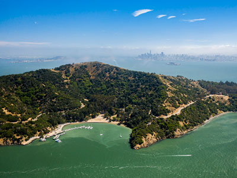
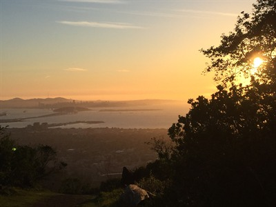
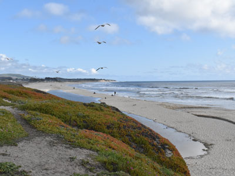
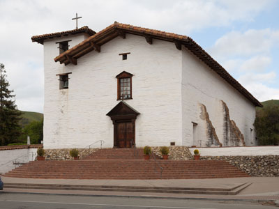
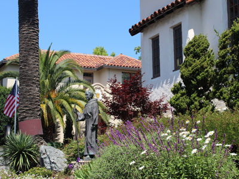
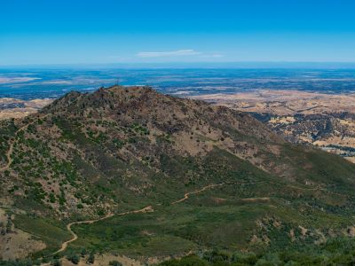
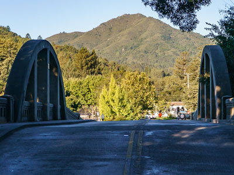
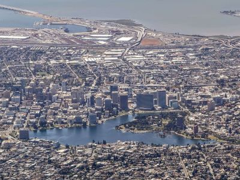
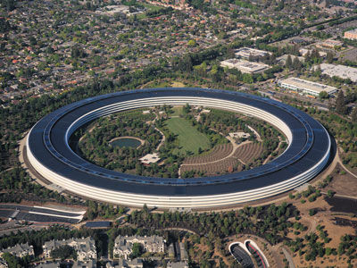
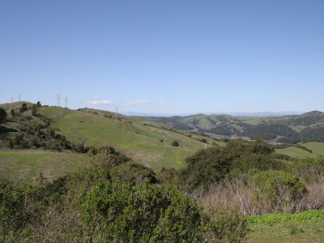

San Francisco Bay Area Travel Guide
Region of California known for its natural beauty, prominent universities, technology companies, and affluence. The Bay Area contains the cities of San Francisco, Oakland, and San Jose, Silicon Valley, and associated regional, state, and national parks
Places to See in San Francisco Bay Area

Taras Bobrovytsky, CC0, via Wikimedia Commons; Image Size Adjusted
.jpg){kind=link}
Angel Island
Island in San Francisco Bay, originally the home of a military installation, the island now offers picturesque views of the San Francisco skyline, the Marin County Headlands and Mount Tamalpais
-400.jpg)
btwashburn, CC BY 2.0, via Wikimedia Commons; Image Size Adjusted
.jpg){kind=link}
Devil's Slide
Steep, rocky coastal promontory with the 1.3-mile-long Devil's Slide Trail open to pedestrians and bicyclists, taking over the section of roadway formerly used by State Route 1 and now bypassed by the new tunnels

Arfactor, CC BY-SA 4.0, via Wikimedia Commons; Image Size Adjusted

Grizzly Peak
Scenic ridge offering panoramic views of the San Francisco Bay, popular for driving, hiking, and cycling along winding mountain roads.

FASTILY, CC BY-SA 4.0, via Wikimedia Commons; Image Size Adjusted

Half Moon Bay
Coastal city named for its crescent shape, is approximately 25 miles south of San Francisco, and known for Mavericks, a big-wave surf location

King of Hearts, CC BY-SA 3.0, via Wikimedia Commons; Image Size Adjusted

Mission San Jose
Old mission church remains in use as a chapel of Saint Joseph Catholic Church, a parish of the Diocese of Oakland. The museum also features a visitor center, museum, and slide show telling the history of the mission

MARELBU, CC BY 3.0, via Wikimedia Commons; Image Size Adjusted
.jpg){kind=link}
Mission San Rafael Arcangel
Spanish mission in San Rafael, California founded in 1817 as a medical asistencia ("sub-mission") of Mission San Francisco de Asís
Mission Santa Clara de Asís
Namesake of both the city and county of Santa Clara, as well as of Santa Clara University. Although ruined and rebuilt six times, the settlement was never abandoned, and today it functions as the university chapel for Santa Clara University

9yz, CC BY-SA 4.0, via Wikimedia Commons; Image Size Adjusted

Mount Diablo State Park
Prominent mountain park offering panoramic summit views, diverse hiking trails, and geological features across thousands of acres of preserved wilderness.

Marthature, CC BY-SA 4.0, via Wikimedia Commons; Image Size Adjusted

Mount Tamalpais
Highest peak in the Marin Hills, which are part of the Northern California Coast Ranges and clearly visible from the city of San Francisco and the East Bay region

Dicklyon, CC BY-SA 4.0, via Wikimedia Commons; Image Size Adjusted

Oakland
Vibrant urban center featuring eclectic arts, diverse cuisine, and a rich cultural heritage expressed through its museums, festivals, and public spaces.
King of Hearts, CC BY-SA 4.0, via Wikimedia Commons; Image Size Adjusted

Point Reyes National Seashore
Prominent cape and popular Northern California tourist destination on the Pacific coast, and approximately 30 miles west-northwest of San Francisco

Daniel L. Lu (user:dllu), CC BY-SA 4.0, via Wikimedia Commons; Image Size Adjusted

Silicon Valley
Region in the southern part of the San Francisco Bay Area in Northern California that serves as a global center for high technology and innovation

Will Elder, Public domain, via Wikimedia Commons; Image Size Adjusted

San Francisco
Cultural, commercial, and financial center in Northern California and a popular tourist destination, known for its cool summers, fog, steep rolling hills, eclectic mix of architecture, and landmarks, including the Golden Gate Bridge

Wesman83, CC BY-SA 3.0, via Wikimedia Commons; Image Size Adjusted

Tilden Regional Park
Expansive natural preserve offering hiking trails, botanical gardens, swimming, steam trains, and family-friendly attractions across varied terrain.

Brocken Inaglory, CC BY-SA 3.0, via Wikimedia Commons; Image Size Adjusted

Wine Country
Region in the northern Bay Area of California known worldwide for its wineries, cuisine, Michelin star restaurants, boutique hotels, luxury resorts, historic architecture, and culture
Overview
The San Francisco Bay Area is a region of about 7.5 million people around the San Francisco, San Pablo, and Suisun bays in Northern California, known for its natural beauty, world-class universities, technology industry, and diversity. Visitors come for the Golden Gate Bridge, cable cars, Alcatraz, and a city of hills, neighborhoods, and outstanding food.
The region also offers redwood forests at Muir Woods, the wine valleys of Napa and Sonoma, the beaches and cliffs of Point Reyes, and the museums, universities, and tech campuses of the East Bay and Silicon Valley. It is easy to combine a big-city stay with outdoor day trips.
Geography
The bay is a large estuary that connects to the Pacific through the Golden Gate strait. It is surrounded by hills and mountains, including Mount Tamalpais in Marin County and Mount Diablo in the East Bay, and the San Andreas and Hayward faults run through the area. The Mediterranean climate is mild, but cold ocean water produces summer fog on the coast and in San Francisco, while inland areas such as San Jose are noticeably warmer.
History
The Ohlone, Miwok, and other peoples lived around the bay for thousands of years. The Spanish expedition of Gaspar de Portolá reached the area in 1769, and in 1776 Spain founded the Presidio and Mission San Francisco de Asís (Mission Dolores). Mexico controlled the area until the 1848 Treaty of Guadalupe Hidalgo, and the Gold Rush transformed San Francisco into the West Coast’s largest city. The 1906 earthquake and fire destroyed much of the city, and the Bay Bridge (1936) and Golden Gate Bridge (1937) followed. After World War II, Stanford University and early electronics firms helped create Silicon Valley, and the United Nations Charter was signed in San Francisco in 1945.
Cities and Towns
San Francisco is the main draw, with Fisherman’s Wharf, Chinatown, Golden Gate Park, and the Painted Ladies. Oakland has Jack London Square, Lake Merritt, and a vibrant arts and food scene, and Berkeley is home to the University of California campus. San Jose is the largest city and the center of Silicon Valley, with Palo Alto, Mountain View, and Cupertino nearby. Sausalito, Napa, and Sonoma are popular nearby getaways.
National Protected Areas
Golden Gate National Recreation Area is one of the largest urban national parks, covering the Presidio, Alcatraz, Fort Point, Muir Beach, and the Marin Headlands. Muir Woods National Monument preserves a redwood grove just north of the city, and Point Reyes National Seashore offers beaches, tule elk, and a historic lighthouse. Other national park sites include the San Francisco Maritime National Historical Park, Rosie the Riveter WWII Home Front National Historical Park in Richmond, and John Muir National Historic Site in Martinez.
State Parks and Historic Sites
Angel Island State Park has hiking, biking, and the history of its immigration station, and Mount Tamalpais State Park offers redwoods and panoramic views. Mount Diablo State Park has some of the widest views in California, and China Camp State Park preserves a former shrimp-fishing village. Coastal and historic sites include Half Moon Bay State Beach, Fort Ross State Historic Park, and Sonoma State Historic Park.
Seasons and Best Time to Visit
San Francisco’s weather is cool year-round, and summer is often foggy and windy, so a jacket is useful even in July. September and October are usually the warmest and clearest months, and they are popular times to visit, including Fleet Week in October. Spring brings green hills and wildflowers, and winter is rainy but mild, with whale watching from December through April and fewer crowds. The East Bay and Silicon Valley are warmer and drier than the city in summer.
This article uses material from the Wikipedia article "San Francisco Bay Area", which is released under the Creative Commons Attribution-Share-Alike License 3.0. Additional information is from the National Park Service pages for Golden Gate National Recreation Area, Muir Woods National Monument, and Point Reyes National Seashore, and California State Parks.